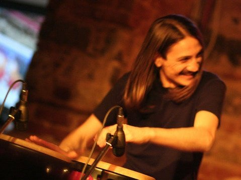

"Bir insanın, işini tanımlarken, -şu mesleğin erbabıyım; diyebilmesi için, o mesleği içeren tüm alanlarda faaliyet gösterebilir donanıma ve icra yeteneğine sahip olması gerektiğine inanıyorum."
-HAKAN ÇETİNKAYA
Diyen sanatçı 1974 yılında Bursa’da doğmuştur. Öğrenimini Bursa Cumhuriyet lisesi devlet yatılı okulunda tamamlayan sanatçı, aynı anda yarı zamanlı olarak, öğretmenlerinin isteği üzerine belediye konservatuarına gitmiş, Türk müziği
nazariyatı okumuştur.
Bu dönemde çok kıymetli hocalarından, ustalarından, Kudüm-Bendir ve Def eğitimi alarak ritim sazlarda ustalaşmak üzere önemli bir adım atmıştır.
İstanbul’a gelişi "Active Orkestrası" ile olmuştur. Orkestra kurucusu Nusret UYAR sayesinde dünya müzikleriyle tanışan sanatçı, Latin-Caz-Flamenko-Klasik Batı Müziği tarzları hakkında da bilgi sahibi olmuş, bizzat Nusret UYAR ve çok
değerli,
rahmetli sanatçı, gitar virtüözü Süleyman SÜNGÜ tarafından eğitilmiştir.
1995 senesinde ilk stüdyosunu kuran sanatçı, "HÇK Band" adında bir orkestra kurmuş, yıllarca ilaç firmalarının gala gecelerinde, bayii toplantıları ve kongrelerinde sahne almıştır. Bu süreç içerisinde birbirinden değerli sanatçılar
ve orkestralar
ile gerek sahne gerekse stüdyolarda çalışmış, performanslar sergilemiştir.
Yıllar içerisinde, kendi projelerini yaratıp sergilemeyi seçen sanatçı, dostlarıyla yola çıkmış ve sırasıyla: "HÇK Band, Hakan ÇETİNKAYA ritim takımı, Tuğra Orkestrası, Darbuka sohbetleri, RomanİstLatino, Örgü Project" isimli
projeleri var
etmiş, yıllarca performanslar sergilemiştir. Yalnızca "Örgü Project" ile bir albüme (Hasan Günyüz&Örgü Project-Asla asla deme) imza atılabilmiştir.
Tüm bu süreçler içerisinde, tarih merakı, edebiyat ve tasavvuf ilmine (çocukluğunun önemli bir bölümü dergah disiplini ile geçmiştir) düşkünlüğü ile tanınan sanatçı, bireysel eğitimini asla bırakmamış, biriktirdiklerini de her
fırsatta öğrencilerine,
çıraklarına aktarmaktan geri durmamıştır.
2010 yılında şahsen kurduğu HÇK Müzik Yapım firmasıyla hem stüdyo kayıt, müzik üretim ve hem de endüstriyel müzik üretimleri yaparak, birçok reklam filmine, belgesel filmlere, tiyatro oyunlarına imzasını atmış; kısa ve uzun metrajlı
sinema
filmlerindeyse, gerek perküsyon sanatçısı, gerekse müzik üretimi ve ses tasarımı konularında katkıda bulunmuştur.
Müzisyen kimliğiyle binlerce kez, yüzlerce sanatçı ve orkestra ile sahne almış, stüdyo ve üretim konularında da yüzlerce işe imza atmış olan sanatçı, mesleğinin eğitim ayağından da asla uzak kalmamıştır.
"İnsan eğitmek, gelecekteki seni inşa etmektir"
-HAKAN ÇETİNKAYA
diyen Hakan ÇETİNKAYA, onlarca gönüllü eğitim ve sosyal sorumluluk projelerinde yer almış, on yıllık serüvende, elinde bazen bir bendir, bazen bir darbuka, ya da bir çift bagetle, ortalama altı bin çocuğa temas etmiştir.
Uzun bir zamandır İZEV (İstanbul zihinsel engelliler için eğitim ve dayanışma vakfı) bünyesinde, Down sendromlu ve zihinsel engelli dostlarımıza, gönüllü olarak, ritim başlığı altında genel müzik eğitimi vermektedir.
İzev vakfında verdiği eğitimlerle dikkat çeken sanatçı, İstanbul İl Milli Eğitim Müdürlüğü tarafından başlatılan, öğretmen akademilerine de eğitimci olarak çağırılmış, iki sezon boyunca, müzik, edebiyat ve sınıf öğretmenlerine
birikimlerini
aktarmıştır.
Bu süreçte, Tasavvuf ilmi ve Anadolu kültürüne ait donanımı fark edilmiş ve kendisi Türk İslam’da da bir söyleşiye davet edilmiştir.
Eğitim turnelerine de katılmış olan sanatçı, gerek performans, gerekse söyleşileriyle başarılı bir eğitimci olduğunu da kanıtlamıştır.
Amasya üniversitesi tarafından da eğitim çalıştayına davet edilmiş, geleceğin okul öncesi eğitim neferlerine ORF eğitimi vermiştir.
Paylaşımlarının ardından gelen olumlu sonuçlar karşısında daha da öğrenmeye hayatını adamış olan sanatçı, eğitimin talep, talebin ise daima kendini yenileyen bir arz ile mümkün olduğuna inanmaktadır.